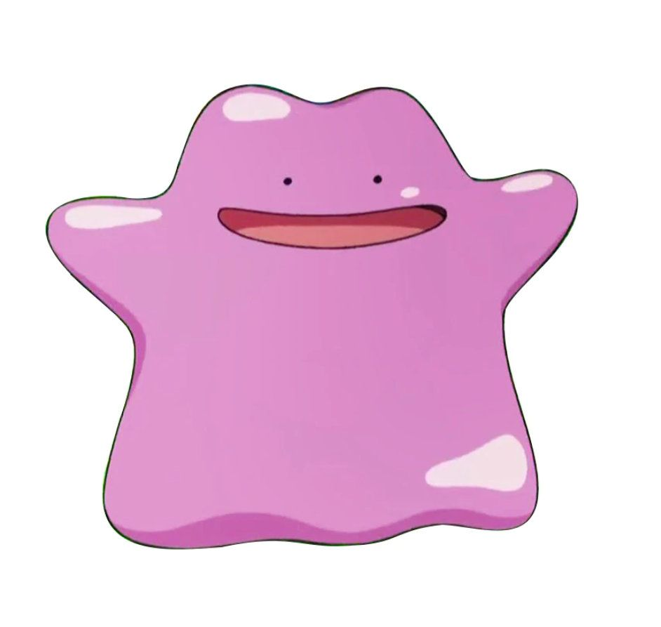
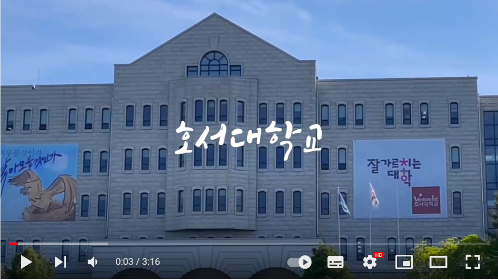

김가은 (Kim, gaeun)
안녕하세요. 저는 호서대 디지털기술경영학과를 재학 중입니다.
디자인에 관심이 많고, 마케팅과 광고에 관심이 많습니다.
고등학교 시절, 학교플래너 제작, 광고홍보동아리와 미술동아리 기장, 각종 UCC대회에
참가했던 경험들이 있습니다. 대학교에서는 이보다 더 많은 경험들을 얻고 싶습니다.
현재 저의 목표는 확고한 진로를 찾는 것입니다. 잘 부탁드립니다.
호서대 홍보영상작품 보러가기 ↓

정보
- 이메일: khoist5@naver.com
- 생년월일: 2002. 05. 01 (21세)
- MBTI: INFP
- 굽네치킨 알바생
학력
- 천안 성환초등학교 졸업
- 천안 성환중학교 졸업
- 천안 북일여자고등학교 졸업
- 천안 호서대 디지털기술경영학과 재학 중
자격증
- 전국한자능력검정시험 2급
- JLPT 일본어 N3